模型分享
10月06日STl图纸文件分享
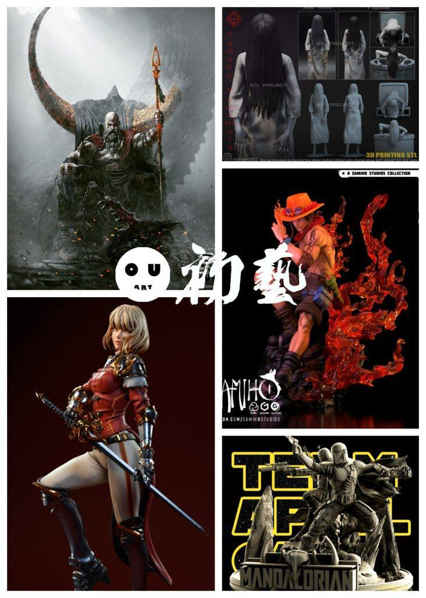
1.战神，王座造型，模型刻画细致，分件合理。
链接：https://pan.baidu.com/s/1v55VST8ms0RwDmhgELJrRg
提取码：oatj
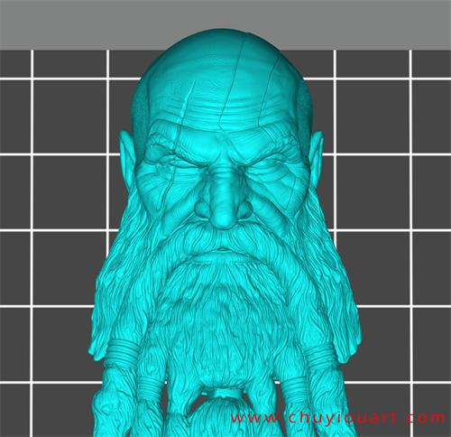
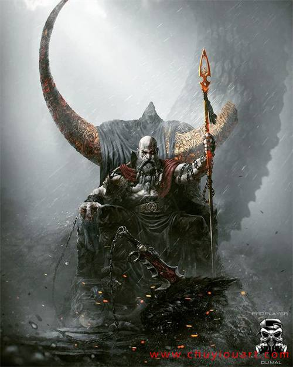
2.贞子，三个造型，站姿、爬电视、爬井，万圣节快到了，这组各方面能发挥的空间很大，推荐给大家。
链接：https://pan.baidu.com/s/1eXeInUQHEbEwLsfKRoW53w
提取码：e49b
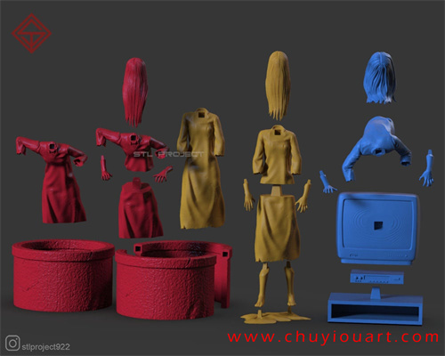
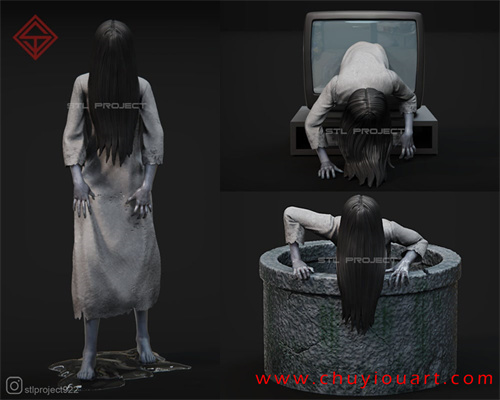
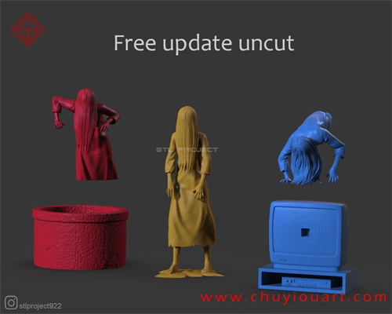
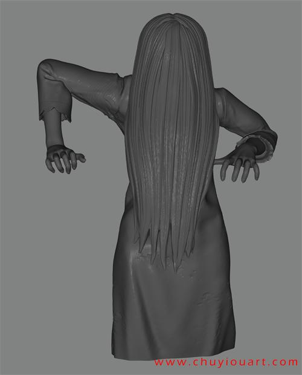
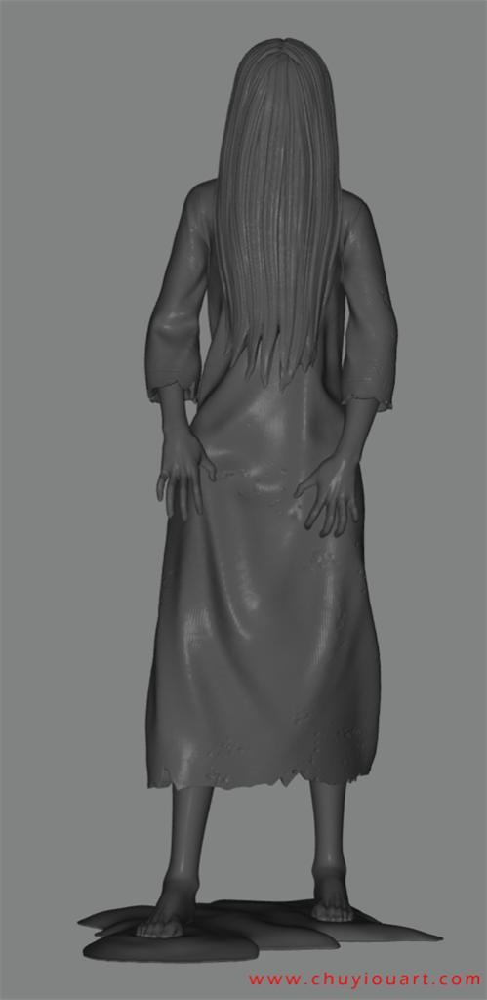
3.海贼王——艾斯，优秀的模型，造型样式丰富，还原非常好，特效件也好，需要注意的是水贴的设计，涂装上要细致才能发挥这个模型的最大优势。
链接：https://pan.baidu.com/s/1h3O7DsbhM68IbL-kbZLVfw
提取码：08eh
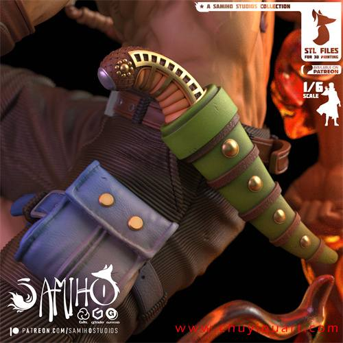
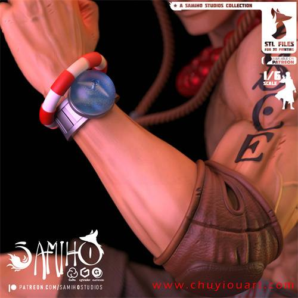
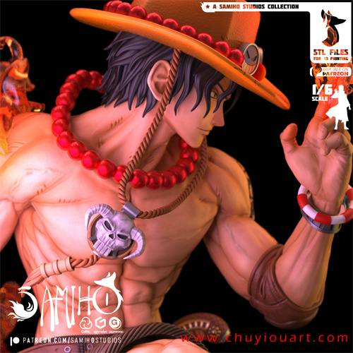
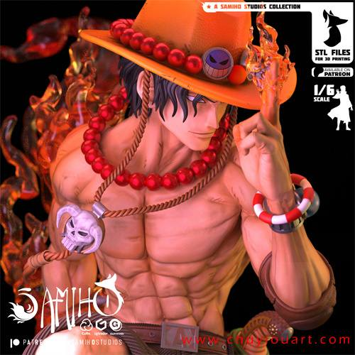
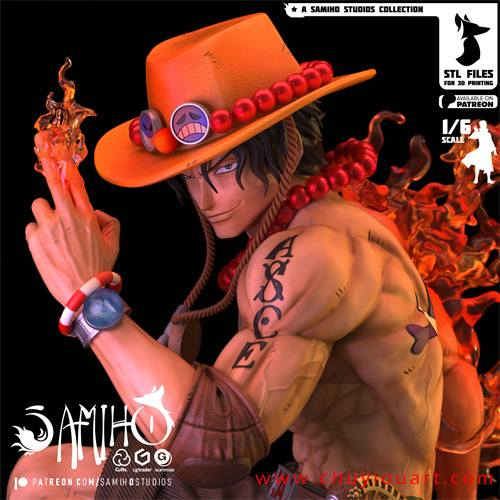
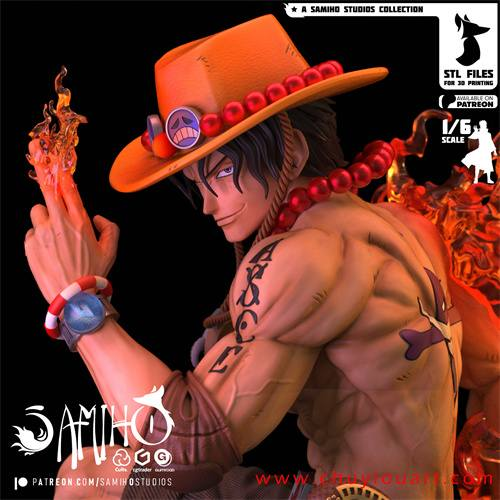
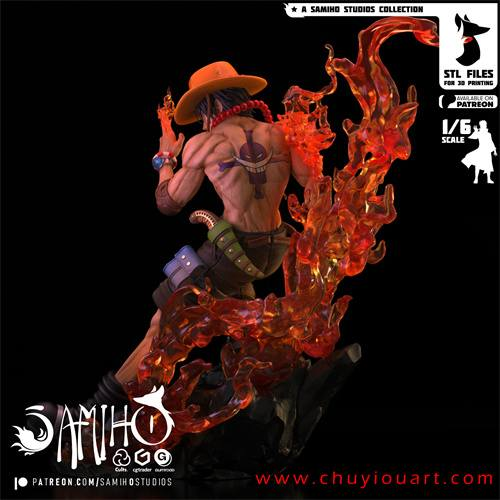
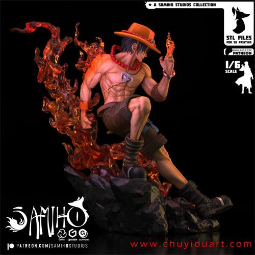
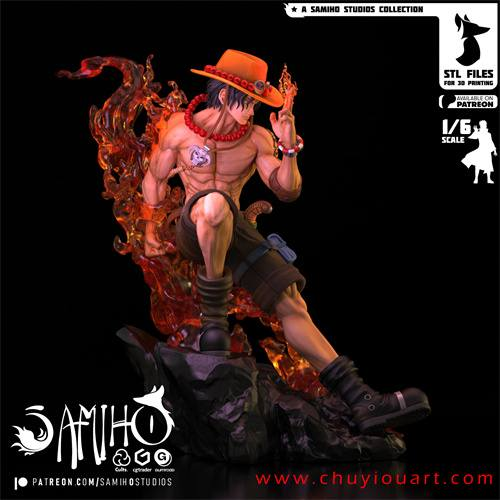
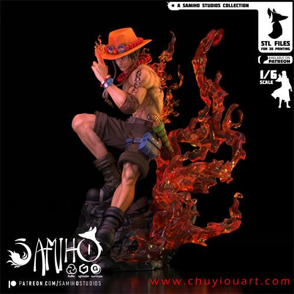

4.《我独自升级》——向坂雫，分件细致，造型动态优秀。
链接：https://pan.baidu.com/s/1X9QMZYO1V_tLgRz5HgCBWg
提取码：ok5u
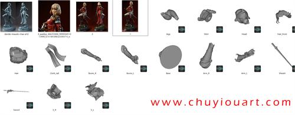
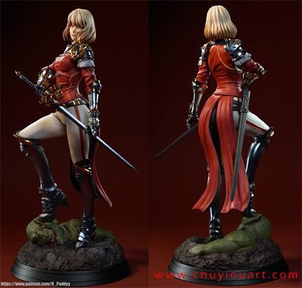
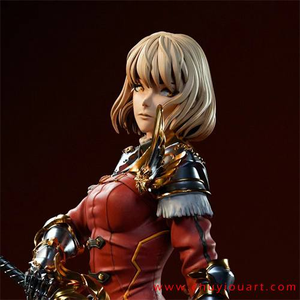
5.星战——波巴·费特，很大的一组，全景和独立雕像还有胸像的组合，精度优秀的一组。
链接：https://pan.baidu.com/s/1jmlXeDQSJyLOS5OB8WFA5Q
提取码：zteu
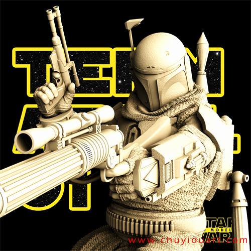
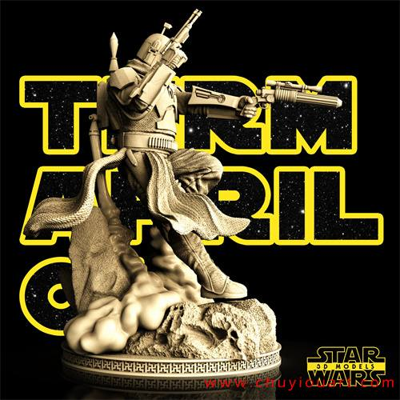
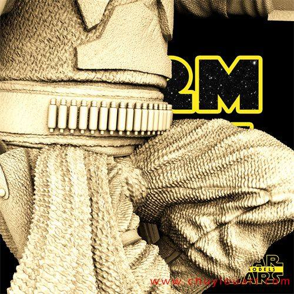
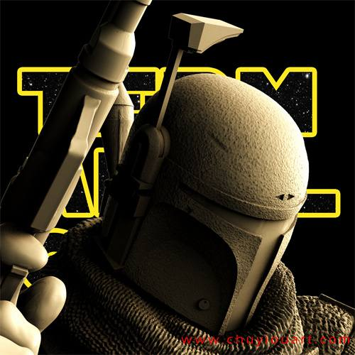
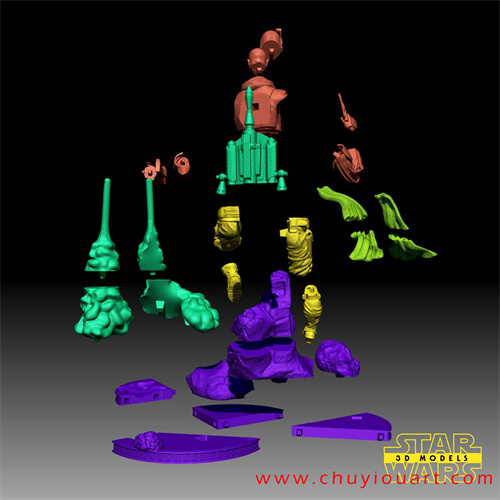
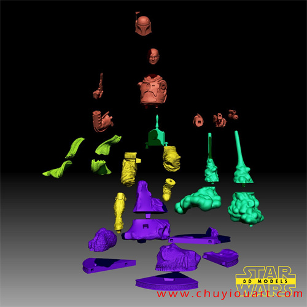
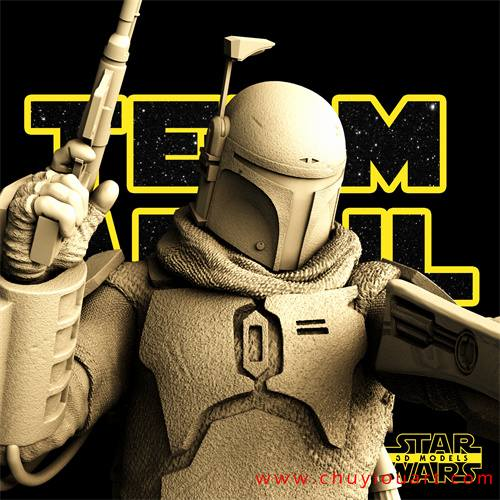
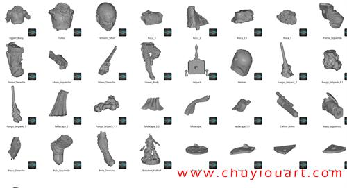
以上内容仅供个人使用（非商用）
ONLY for PERSONAL (NON-COMMERCIAL) use.
加群获得更多免费模型！